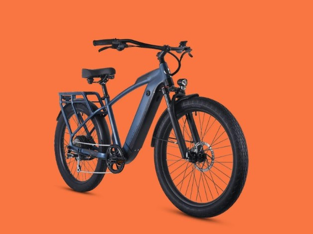
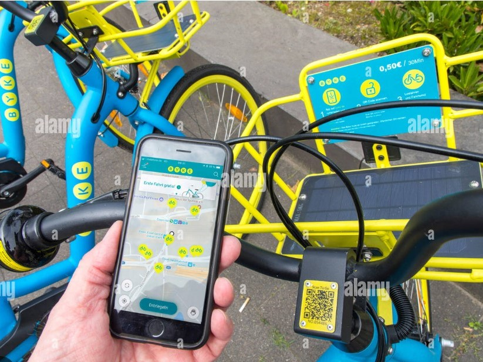

Within this project, I leveraged SQL to perform data cleaning and extraction of pertinent information from a comprehensive dataset focused on bicycle sales in the United States. Subsequently, utilizing Tableau, I crafted an executive dashboard featuring crucial metrics including yearly revenue, store-specific revenue, and various other essential indicators. This dynamically updated dashboard offers the flexibility to filter data on a yearly or monthly basis, empowering executives with actionable insights to enhance decision-making within the business operations.


In this project, I conducted a comprehensive analysis of a company's Balance Sheet, deriving crucial insights to generate detailed reports on sales, inventory, and profit and loss metrics. These meticulously crafted reports offer versatile filtering options based on country, year, quarterly, monthly, and daily data, providing stakeholders with granular visibility and strategic decision-making capabilities across various operational timelines and parameters

>In this project, I developed a comprehensive SQL codebase to establish a database tailored for an online bicycle rental company. This involved the creation of multiple tables populated with relevant data. Additionally, I implemented two triggers using Procedural Language (PL) to enforce essential business rules. The first trigger ensures that customers can rent a maximum of two bikes simultaneously, while the second trigger prevents users from renting bikes if they have an outstanding balance exceeding $500. These triggers serve as pivotal components in maintaining operational integrity and upholding financial prudence within the system.

Within this project, I've curated a dataset encompassing customer information along with their sales records. I've meticulously crafted a series of SQL queries designed to extract pivotal insights regarding customer behavior and purchasing patterns. These queries generate outputs that provide executives with a profound understanding of their customer base, empowering them to tailor and adapt distinct marketing strategies aimed at augmenting sales and overall revenue. This data-driven approach enables informed decision-making and strategic adjustments to maximize business growth and customer engagement.